Con su centro patrimonial y calles repletas de historia, rodeada de playas y un concurrido puerto.
La Coruña te invita a sambullirte en sus aguas, empaparte de cultura, bailar flamenco y desgustar sus más variados platos de mar.
Dónde la fusión entre lo antiguo y lo nuevo te llevan a soñar. Dejate sorprender por La Coruña, la ciudad de los miles de arcoiris.
Lugares Destacados
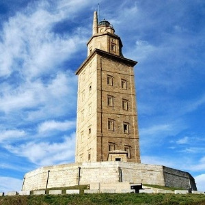
Torre de Hercules
Es el icono legendario de la Coruña.
Construida por los romanos a finales del siglo I, tiene en sus cimientos leyendas.
Es el faro en funcionamiento más antiguo del mundo, razon por la cual es Patrimonio de la Humanidad.
Desde la cima, con una altura de 55 metros, se puede observar toda la ciudad en su máximo esplendor,
gente de todas partes del mundo vienen a disfrutar de su fabulosa vista y sus pintorescos alrededores.
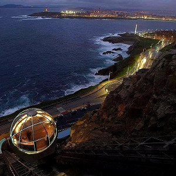
Monte San Pedro
Lo que solia ser una fortaleza militar situada en un punto geográfico estratégico
para la defensa de la ciudad. Hoy en día es un hermoso
monte donde la naturaleza se mezcla con la historia, dónde adultos y niños pueden
disfrutar de este entorno por igual.
Cuenta con un elevador panoramico, un laberinto inglés confeccionado con plantas
y un observatorio donde se destaca la vista al horizonte costero.
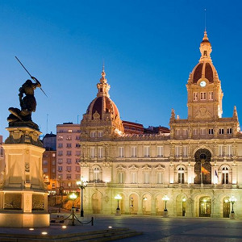
Plaza Maria Pita
Rodeada de edificios que evocan la típica arquitectura gallega y el majestuoso palacio del ayuntamiento.
Está plaza se viste de gala cada Navidad y se convierte en centro de todas las festividades, cambiando cada vez.
Fue nombrada así en memoria de la heroina Maria Pita que en 1589 tuvo la valentía de imponerse y resistir ante los Ingleses.
En su honor fue inmortalizada en bronce en medio de la plaza, dónde todo el mundo puede apreciar y conocer su leyenda.
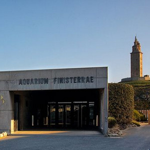
Aquarium Finisterrae
También conocido como la Casa de los Peces, es un centro interactivo, sobre aspectos relacionados con la biología marina,
la oceanografía y el mar en general. Alberga una gran variedad de especies, para conocer, descubrir y admirar.
Mediante juegos e imágenes nos enseña la importancia de preservar la vida marina.
Con el Nautilus navegamos por las profundidades del oceano, descubrimos a sus habitantes y nos sorprendemos con sus enseñanzas.
Galeria
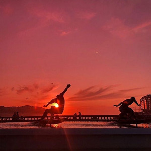
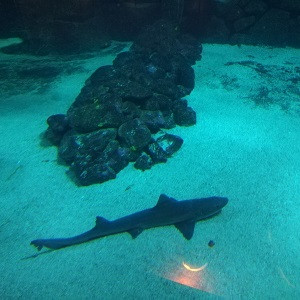
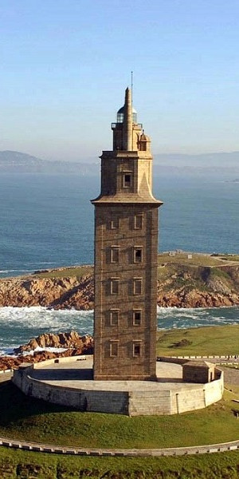
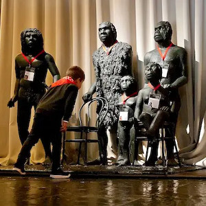
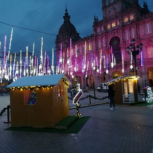
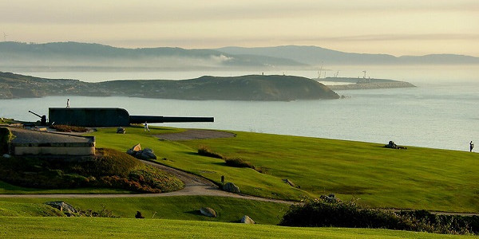
Recomendaciones
Domus
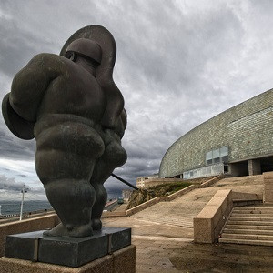
Anteriormente conocida como Casa del Hombre,
es un museo interactivo de carácter científico.
Algunas de las zonas que se pueden visitar son: